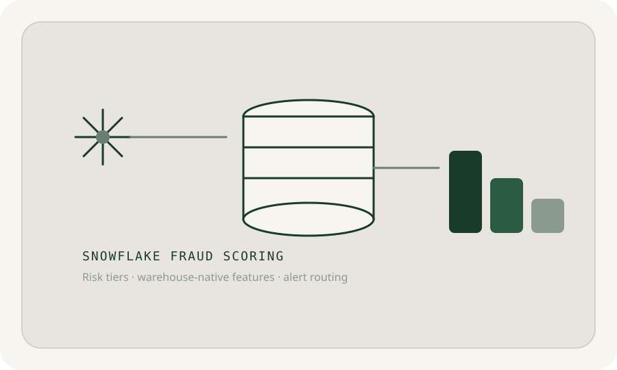

FRAUD DETECTION · SNOWFLAKE + SQL
Turning 6.3 million transactions into a review queue
The problem
PaySim contains millions of mobile-money transactions, but only 0.13% are fraud. A useful system had to find the risky behavior without treating every unusual payment as equally suspicious.
What I tried
I built raw, staging, and mart layers in Snowflake. Then I tested three behavioral signals: an origin account dropping to zero, a destination balance staying unchanged after receiving funds, and transaction types associated with every fraud case in the dataset.
What happened
The scoring rules sorted every transaction into four risk tiers. The HIGH tier contained 5,145 transactions, and 76% were labeled fraud. That gave an investigator a much smaller place to start.
What I’d test next
PaySim is synthetic. With real bank data, I would test stability over time, monitor feature drift, and measure how many legitimate customers the rules inconvenience.
